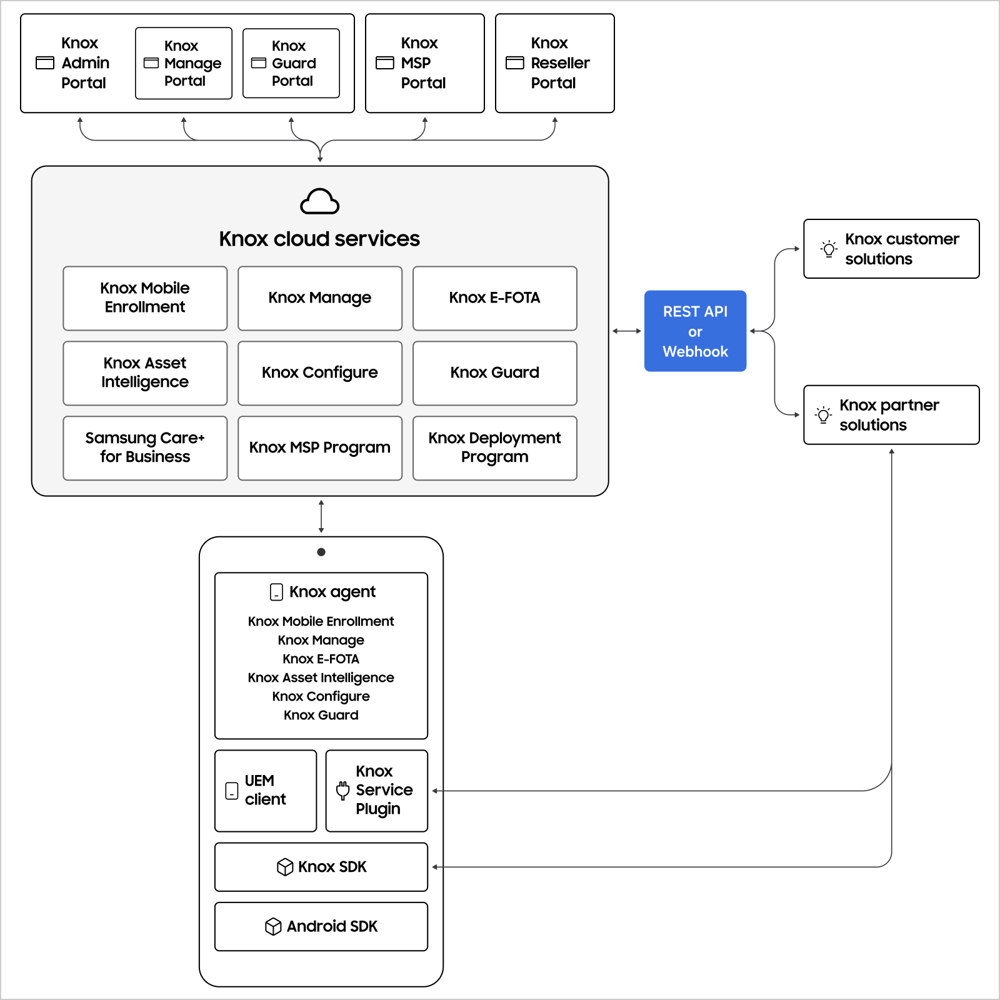

Fundamentals
Last updated May 21st, 2026
Welcome to Samsung Knox developer documentation! This page is designed to help you understand the Knox ecosystem and choose the right services and tools for your use case.
Target audience
This content is aimed at:
- Developers building applications that integrate with Samsung Knox services
- IT administrators evaluating Knox cloud services for their organization
- System integrators customizing devices for enterprise customers
- Partners (resellers, distributors, carriers) deploying Knox solutions
New to Knox? Start with Get started to set up your developer account and access credentials.
The Knox ecosystem
Samsung Knox provides a comprehensive platform for device management, security, and customization. The following diagram shows how Knox services work together:

You can only access services you have a license for. Knox Deployment Program and Knox MSP Program APIs are only accessible by Knox partners (distributors, carriers, and resellers).
Knox services by workflow
1. Register and upload devices
Before devices can be managed, they must be registered with Knox cloud services.
| Service | Who uses it | What it does |
|---|---|---|
| Knox Deployment Program | Device resellers, carriers, distributors | Register IMEIs or serial numbers of devices purchased by enterprises. Access via Knox Deployment Program portal or REST API. Device information is stored on Knox cloud servers. |
2. Enroll devices for management
Once registered, devices need to be enrolled in a management solution.
| Service | Who uses it | What it does |
|---|---|---|
| Knox Mobile Enrollment | Enterprise IT admins | Set up automatic enrollment in your UEM solution. Devices are ready for management out of the box. Access via Knox Admin Portal or Knox Mobile Enrollment REST API. UEM information is stored on Knox cloud servers. |
3. Manage and customize devices
Knox cloud services provide device management, monitoring, security, and customization capabilities.
| Service | Who uses it | What it does |
|---|---|---|
| Knox Manage | Enterprise IT admins | Samsung’s UEM solution for managing device fleets with comprehensive policies. Seamlessly integrates with other Knox cloud services. Access via Knox Admin Portal, Knox Manage admin console, or Knox Manage REST API. |
| Knox Configure | System Integrators | Customize devices for vertical applications (kiosks, POS terminals, inventory trackers). Access via Knox Admin Portal or Knox Configure REST API. Alternatively, you can use Knox SDK to fully customize the setup and operation of a device. |
| Knox E-FOTA | Enterprise IT admins | Control firmware updates across your device fleet. Access via Knox Admin Portal or Knox E-FOTA REST API. |
| Knox Asset Intelligence | Enterprise IT admins | Monitor device status and condition. Provides analytics for usage and lifecycle insights. Access via Knox Admin Portal or Knox Asset Intelligence REST API. |
| Knox Guard | Enterprise IT admins | Protect devices from fraud and theft. Detect and lock lost, stolen, or non-compliant devices. Access via Knox Admin Portal, Knox Guard console, or Knox Guard REST API. |
| Knox Webhook Notification | Developers | Subscribe to events from Knox Asset Intelligence, Knox E-FOTA, and Knox Guard. Receive webhook notifications when events trigger. |
| Knox Attestation | UEM vendors, Independent Software Vendors (ISVs) | Verify devices are running authorized firmware. Use with the Knox Attestation REST API and Knox SDK. |
4. Build custom device management apps
For advanced customization beyond cloud services, use the Knox SDK.
| Service | Who uses it | What it does |
|---|---|---|
| Knox SDK | App developers | Create apps that manage, secure, and customize Samsung Android devices. Extends Android SDK with enhanced device manageability and security. |
| Knox Service Plugin | UEM vendors, IT admins | Deploy new Knox features immediately upon release. UEM vendors support via web console; device client handles configuration. |
5. Managed service provider options
| Service | Who uses it | What it does |
|---|---|---|
| Knox MSP Program | Managed service providers | Onboard IT admin customers and deploy Knox cloud services on their behalf. Access via MSP portal or APIs. |
Related resources
- Get started - Set up your developer account
- Sign in as a Knox developer - Access the Knox Developer Portal
- FAQ - Common questions about Knox development
- Get support - Contact support for assistance
On this page
Is this page helpful?